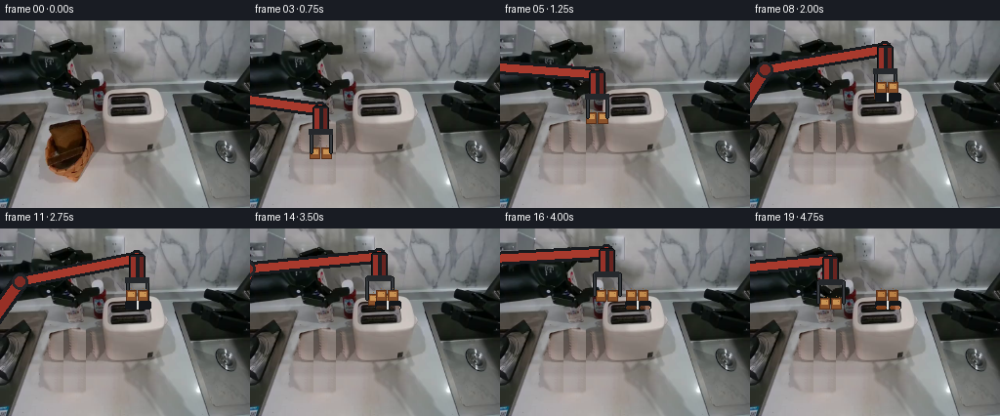
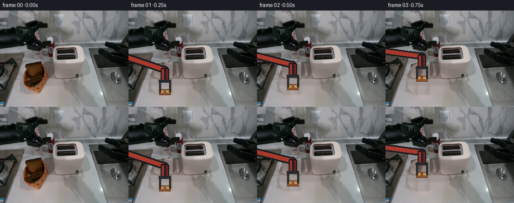
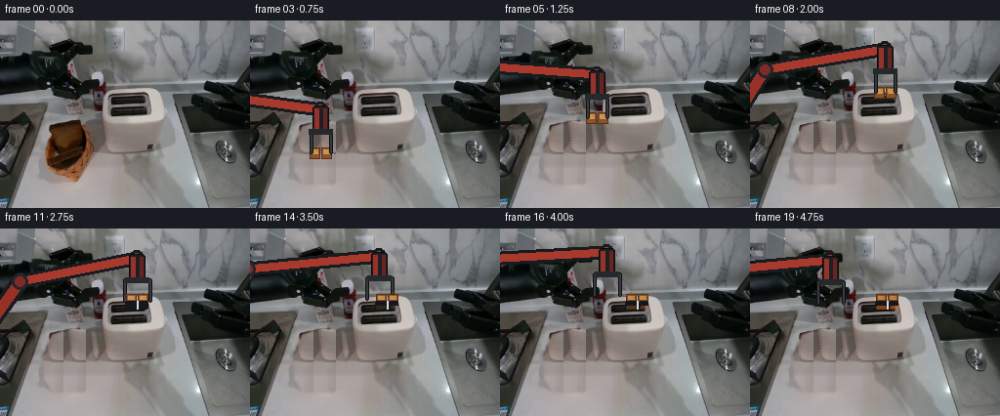

CODING AGENTS AS PIXEL WORLD MODELS
traex/Seed-2.1-Pro-0915 · common50_0001
点击播放 · 原生 RGB 像素
逐轮保存的候选
回放视频、检查图与代码变化。
每份候选均可单独播放。实际图片检查记录在下方工具轨迹中。
候选 01播放与检查图
点击播放 · 原生 RGB 像素

展开代码变化
--- 上一保存版本
+++ 本次保存版本
@@ -0,0 +1,195 @@
+from pathlib import Path
+import math
+
+import numpy as np
+from PIL import Image, ImageDraw, ImageFilter
+
+import artifact_io
+
+
+ROOT = Path(__file__).resolve().parent
+WIDTH, HEIGHT, FRAME_COUNT = 256, 192, 20
+
+
+def smoothstep(value):
+ value = np.clip(value, 0.0, 1.0)
+ return value * value * (3.0 - 2.0 * value)
+
+
+def keyframed_position(frame_index, keys):
+ if frame_index <= keys[0][0]:
+ return np.array(keys[0][1], dtype=float)
+ if frame_index >= keys[-1][0]:
+ return np.array(keys[-1][1], dtype=float)
+ for (f0, p0), (f1, p1) in zip(keys[:-1], keys[1:]):
+ if f0 <= frame_index <= f1:
+ t = smoothstep((frame_index - f0) / (f1 - f0))
+ return np.array(p0) * (1.0 - t) + np.array(p1) * t
+
+
+def make_clean_background(first):
+ """Remove the initial left end effector so the rigid arm can be redrawn."""
+ bg = first.copy()
+ mask = Image.new("L", (WIDTH, HEIGHT), 0)
+ md = ImageDraw.Draw(mask)
+ md.polygon(
+ [
+ (74, 101), (96, 106), (100, 126), (96, 145), (95, 162),
+ (83, 168), (54, 167), (45, 153), (44, 129), (53, 108),
+ ],
+ fill=255,
+ )
+ mask = mask.filter(ImageFilter.GaussianBlur(1.1))
+
+ src = np.asarray(first).copy()
+ filled = src.copy()
+ alpha = np.asarray(mask) > 8
+ for y in range(100, 170):
+ for x in range(42, 102):
+ if alpha[y, x]:
+ source_x = 101 + ((x - 42) % 23)
+ jitter = 0 if (x + y) % 3 else ((y - x) % 3) - 1
+ filled[y, x] = src[y, source_x + jitter]
+
+ soft_mask = np.asarray(mask).astype(float) / 255.0
+ out = src * (1.0 - soft_mask[..., None]) + filled * soft_mask[..., None]
+ return Image.fromarray(out.astype(np.uint8), "RGB")
+
+
+def inverse_kinematics(wrist, shoulder=(-45.0, 145.0), len_upper=112.0, len_forearm=110.0):
+ sx, sy = shoulder
+ wx, wy = wrist
+ dx, dy = wx - sx, wy - sy
+ distance = math.hypot(dx, dy)
+ distance = np.clip(distance, abs(len_upper - len_forearm) + 0.5, len_upper + len_forearm - 0.5)
+ base = math.atan2(dy, dx)
+ cos_elbow = distance * distance - len_upper * len_upper - len_forearm * len_forearm
+ cos_elbow /= 2.0 * len_upper * len_forearm
+ elbow_angle = math.acos(np.clip(cos_elbow, -1.0, 1.0))
+ angle = base - elbow_angle
+ elbow = np.array([
+ sx + len_upper * math.cos(angle),
+ sy + len_upper * math.sin(angle),
+ ])
+ return elbow, np.array([wx, wy], dtype=float)
+
+
+def draw_line(draw, p0, p1, fill, width):
+ draw.line([tuple(p0), tuple(p1)], fill=fill, width=width)
+ r = width * 0.5
+ draw.ellipse((p0[0] - r, p0[1] - r, p0[0] + r, p0[1] + r), fill=fill)
+ draw.ellipse((p1[0] - r, p1[1] - r, p1[0] + r, p1[1] + r), fill=fill)
+
+
+def bread_colors(toast_amount):
+ t = np.clip(toast_amount, 0.0, 1.0)
+ crust = np.array([139, 82, 42]) * (1 - t) + np.array([104, 55, 27]) * t
+ crumb = np.array([202, 148, 84]) * (1 - t) + np.array([158, 91, 42]) * t
+ return tuple(crust.astype(np.uint8)), tuple(crumb.astype(np.uint8))
+
+
+def draw_bread(draw, cx, cy, toast_amount=0.0, clip_bottom=None):
+ crust, crumb = bread_colors(toast_amount)
+ half = 5
+ bottom = cy + half + 1
+ if clip_bottom is not None:
+ bottom = min(bottom, clip_bottom)
+ if bottom <= cy - half:
+ return
+ x0, y0, x1, y1 = cx - half, cy - half, cx + half, bottom
+ draw.rectangle((x0, y0, x1, y1), fill=tuple(int(v) for v in crust))
+ draw.rectangle((x0 + 2, y0 + 2, x1 - 2, min(y1 - 2, y0 + 6)),
+ fill=tuple(int(v) for v in crumb))
+ for j, (mx, my) in enumerate([(-2, 1), (1, 3), (3, -1), (-1, -2)]):
+ if y0 + my < bottom:
+ shade = tuple(int(v * 0.72) for v in crumb)
+ draw.point((cx + mx + (j % 2), y0 + my), fill=shade)
+ draw.rectangle((x0, y0, x1, y1), outline=(90, 49, 26))
+
+
+def draw_arm_and_gripper(base_image, wrist, open_gripper):
+ frame = base_image.convert("RGBA")
+ overlay = Image.new("RGBA", frame.size, (0, 0, 0, 0))
+ draw = ImageDraw.Draw(overlay)
+
+ shoulder = np.array([-45.0, 145.0])
+ elbow, wrist_xy = inverse_kinematics(wrist)
+ draw_line(draw, shoulder, elbow, (24, 27, 31, 255), 17)
+ draw_line(draw, elbow, wrist_xy, (24, 27, 31, 255), 15)
+ draw_line(draw, shoulder, elbow, (151, 48, 38, 255), 11)
+ draw_line(draw, elbow, wrist_xy, (168, 58, 45, 255), 9)
+ draw.ellipse((elbow[0] - 8, elbow[1] - 8, elbow[0] + 8, elbow[1] + 8),
+ fill=(35, 38, 42, 255))
+ draw.ellipse((elbow[0] - 5, elbow[1] - 5, elbow[0] + 5, elbow[1] + 5),
+ fill=(126, 43, 36, 255))
+
+ wx, wy = wrist_xy
+ draw.rounded_rectangle((wx - 8, wy - 4, wx + 8, wy + 23), radius=3,
+ fill=(28, 31, 35, 255), outline=(10, 11, 12, 255))
+ draw.rectangle((wx - 6, wy - 1, wx - 2, wy + 20), fill=(151, 50, 41, 255))
+ draw.rectangle((wx + 3, wy - 1, wx + 6, wy + 20), fill=(105, 36, 32, 255))
+
+ draw_bread(draw, wx - 6, wy + 44, 0.0)
+ draw_bread(draw, wx + 6, wy + 44, 0.0)
+
+ finger_offset = 13 if open_gripper else 10
+ for side in (-1, 1):
+ x0 = wx + side * finger_offset - 1
+ draw.rounded_rectangle((x0, wy + 21, x0 + 3, wy + 45), radius=1,
+ fill=(54, 58, 62, 255), outline=(15, 17, 19, 255))
+ draw.rectangle((wx - 12, wy + 20, wx + 12, wy + 25), fill=(37, 40, 44, 255))
+ return Image.alpha_composite(frame, overlay).convert("RGB")
+
+
+def draw_inserted_bread(frame, toast_amount, glow_amount=0.0):
+ frame = frame.convert("RGBA")
+ overlay = Image.new("RGBA", frame.size, (0, 0, 0, 0))
+ draw = ImageDraw.Draw(overlay)
+ draw_bread(draw, 134, 68, toast_amount, clip_bottom=77)
+ draw_bread(draw, 146, 68, toast_amount, clip_bottom=77)
+ draw.rounded_rectangle((128, 74, 140, 82), radius=2, fill=(20, 23, 27, 255))
+ draw.rounded_rectangle((142, 74, 154, 82), radius=2, fill=(20, 23, 27, 255))
+ draw.rectangle((140.5, 74, 141.5, 82), fill=(218, 221, 219, 255))
+ if glow_amount > 0:
+ alpha = int(70 * glow_amount)
+ draw.rounded_rectangle((129, 79, 139, 82), radius=1, fill=(235, 104, 28, alpha))
+ draw.rounded_rectangle((143, 79, 153, 82), radius=1, fill=(235, 104, 28, alpha))
+ return Image.alpha_composite(frame, overlay).convert("RGB")
+
+
+def main():
+ first = Image.open(ROOT / "first_frame.png").convert("RGB")
+ background = make_clean_background(first)
+
+ carry_keys = [
+ (1, (72, 118)), (2, (71, 108)), (3, (72, 91)), (4, (82, 72)),
+ (5, (99, 55)), (6, (118, 42)), (7, (131, 33)), (8, (138, 29)),
+ (9, (140, 28)), (10, (140, 28)), (11, (140, 30)), (12, (140, 32)),
+ (13, (140, 32)),
+ ]
+ retreat_keys = [
+ (13, (140, 32)), (14, (132, 28)), (15, (121, 25)), (16, (109, 24)),
+ (17, (98, 25)), (18, (89, 28)), (19, (82, 32)),
+ ]
+
+ frames = [np.asarray(first, dtype=np.uint8)]
+ for index in range(1, FRAME_COUNT):
+ if index <= 13:
+ wrist = keyframed_position(index, carry_keys)
+ frame = draw_arm_and_gripper(background, wrist, index == 13)
+ if index >= 8:
+ frame = draw_inserted_bread(frame, 0.0)
+ else:
+ wrist = keyframed_position(index, retreat_keys)
+ toast_amount = min(1.0, (index - 13) / 6.0)
+ frame = draw_inserted_bread(background, toast_amount * 0.35, toast_amount)
+ frame = draw_arm_and_gripper(frame, wrist, True)
+ frame = draw_inserted_bread(frame, toast_amount * 0.35, toast_amount)
+ frames.append(np.asarray(frame, dtype=np.uint8))
+
+ frames = np.stack(frames, axis=0)
+ artifact_io.save(frames, ROOT)
+
+
+if __name__ == "__main__":
+ main()
候选 02播放与检查图
点击播放 · 原生 RGB 像素

展开代码变化
--- 上一保存版本
+++ 本次保存版本
@@ -107,7 +107,7 @@
draw.rectangle((x0, y0, x1, y1), outline=(90, 49, 26))
-def draw_arm_and_gripper(base_image, wrist, open_gripper):
+def draw_arm_and_gripper(base_image, wrist, open_gripper, carrying=True):
frame = base_image.convert("RGBA")
overlay = Image.new("RGBA", frame.size, (0, 0, 0, 0))
draw = ImageDraw.Draw(overlay)
@@ -129,8 +129,9 @@
draw.rectangle((wx - 6, wy - 1, wx - 2, wy + 20), fill=(151, 50, 41, 255))
draw.rectangle((wx + 3, wy - 1, wx + 6, wy + 20), fill=(105, 36, 32, 255))
- draw_bread(draw, wx - 6, wy + 44, 0.0)
- draw_bread(draw, wx + 6, wy + 44, 0.0)
+ if carrying:
+ draw_bread(draw, wx - 6, wy + 44, 0.0)
+ draw_bread(draw, wx + 6, wy + 44, 0.0)
finger_offset = 13 if open_gripper else 10
for side in (-1, 1):
@@ -176,14 +177,14 @@
for index in range(1, FRAME_COUNT):
if index <= 13:
wrist = keyframed_position(index, carry_keys)
- frame = draw_arm_and_gripper(background, wrist, index == 13)
- if index >= 8:
+ frame = draw_arm_and_gripper(background, wrist, index == 13, index < 13)
+ if index >= 11:
frame = draw_inserted_bread(frame, 0.0)
else:
wrist = keyframed_position(index, retreat_keys)
toast_amount = min(1.0, (index - 13) / 6.0)
frame = draw_inserted_bread(background, toast_amount * 0.35, toast_amount)
- frame = draw_arm_and_gripper(frame, wrist, True)
+ frame = draw_arm_and_gripper(frame, wrist, True, False)
frame = draw_inserted_bread(frame, toast_amount * 0.35, toast_amount)
frames.append(np.asarray(frame, dtype=np.uint8))
候选 03播放与检查图
点击播放 · 原生 RGB 像素

展开代码变化
--- 上一保存版本
+++ 本次保存版本
@@ -146,10 +146,10 @@
frame = frame.convert("RGBA")
overlay = Image.new("RGBA", frame.size, (0, 0, 0, 0))
draw = ImageDraw.Draw(overlay)
- draw_bread(draw, 134, 68, toast_amount, clip_bottom=77)
- draw_bread(draw, 146, 68, toast_amount, clip_bottom=77)
+ draw_bread(draw, 134, 72, toast_amount, clip_bottom=74)
+ draw_bread(draw, 146, 72, toast_amount, clip_bottom=74)
draw.rounded_rectangle((128, 74, 140, 82), radius=2, fill=(20, 23, 27, 255))
- draw.rounded_rectangle((142, 74, 154, 82), radius=2, fill=(20, 23, 27, 255))
+ draw.rounded_rectangle((142, 74, 151, 82), radius=2, fill=(20, 23, 27, 255))
draw.rectangle((140.5, 74, 141.5, 82), fill=(218, 221, 219, 255))
if glow_amount > 0:
alpha = int(70 * glow_amount)
@@ -177,8 +177,8 @@
for index in range(1, FRAME_COUNT):
if index <= 13:
wrist = keyframed_position(index, carry_keys)
- frame = draw_arm_and_gripper(background, wrist, index == 13, index < 13)
- if index >= 11:
+ frame = draw_arm_and_gripper(background, wrist, index >= 10, index < 10)
+ if index >= 10:
frame = draw_inserted_bread(frame, 0.0)
else:
wrist = keyframed_position(index, retreat_keys)
可观测工具轨迹
实际执行的命令与返回图片。
命令 1exit 0
/bin/bash -lc "ls -la && sed -n '1,240p' prompt.txt && sed -n '1,320p' GENERATION_RULES.md"
命令 2exit 0
/bin/bash -lc "cat task_spec.json && sed -n '1,260p' artifact_io.py && python - <<'PY'
from PIL import Image
import numpy as np
im=Image.open('first_frame.png')
print(im.mode, im.size)
a=np.array(im.convert('RGB'))
print(a.shape, a.dtype, a.min(), a.max(), a.mean(axis=(0,1)))
# unique colors count and most common
colors, counts=np.unique(a.reshape(-1,3), axis=0, return_counts=True)
idx=np.argsort(counts)[-20:][::-1]
for i in idx:
print(tuple(colors[i]), counts[i])
PY"命令 3exit 0
/bin/bash -lc "python - <<'PY'
from PIL import Image
import numpy as np
a=np.array(Image.open('first_frame.png').convert('RGB'))
# coarse 128x64 blocks, classify into symbols from dominant RGB rules
H,W=a.shape[:2]
for gw,gh in [(128,48),(96,48)]:
print('\\nSIZE',gw,gh)
for gy in range(gh):
y0=gy*H//gh;y1=(gy+1)*H//gh
line=''
for gx in range(gw):
x0=gx*W//gw;x1=(gx+1)*W//gw
p=a[y0:y1,x0:x1].reshape(-1,3).mean(0)
r,g,b=p
mx,mn=max(p),min(p)
if r>180 and g>180 and b>170: ch='.' # white/light table
elif r>140 and g>120 and b<100 and r>b+35: ch='b' # brown bread/table
elif r<60 and g<60 and b<70: ch='#' # dark
elif r>180 and 100<g<180 and b<100: ch='o' # orange?
elif r>180 and g>180 and b<120: ch='y'
elif b>r+20 and b>g+10: ch='B'
elif g>r+15 and g>b+5: ch='G'
elif r>g+15 and r>b+15: ch='R'
elif abs(r-g)<12 and abs(g-b)<12:
if r>180:ch='.'
elif r>120:ch='-'
elif r>70:ch=':'
else:ch='+'
else: ch='?'
line+=ch
print(line)
PY"命令 4exit 0
/bin/bash -lc "python - <<'PY'
from PIL import Image
import numpy as np
from collections import deque
a=np.array(Image.open('first_frame.png').convert('RGB'))
H,W=a.shape[:2]
# connected components for masks with 8-connectivity
def comps(mask, minsize=20):
seen=np.zeros(mask.shape,bool); out=[]
for y in range(H):
for x in range(W):
if mask[y,x] and not seen[y,x]:
q=[(y,x)]; seen[y,x]=1; pts=[]
for yy,xx in q:
pts.append((xx,yy))
for dy in (-1,0,1):
for dx in (-1,0,1):
if dy==0 and dx==0: continue
nx,ny=xx+dx,yy+dy
if 0<=nx<W and 0<=ny<H and mask[ny,nx] and not seen[ny,nx]:
seen[ny,nx]=1;q.append((ny,nx))
if len(pts)>=minsize:
xs=[p[0] for p in pts]; ys=[p[1] for p in pts]
out.append((len(pts),(min(xs),min(ys),max(xs),max(ys))))
return sorted(out,reverse=True)
rules={
'white': (a.min(2)>185),
'lightgray': ((a.min(2)>145)&(a.max(2)<230)),
'dark': (a.max(2)<55),
'red': ((a[:,:,0]>100)&(a[:,:,0]>a[:,:,1]+35)&(a[:,:,0]>a[:,:,2]+25)),
'brown': ((a[:,:,0]>100)&(a[:,:,0]>a[:,:,2]+25)&(a[:,:,1]>55)&(a[:,:,1]>a[:,:,2]+5)&(a[:,:,0]<210)),
'orange_yellow': ((a[:,:,0]>170)&(a[:,:,1]>110)&(a[:,:,2]<100)),
'blue': ((a[:,:,2]>a[:,:,0]+25)&(a[:,:,2]>80)),
}
for name,m in rules.items():
print('\\n',name,m.sum())
for c in comps(m,30)[:20]: print(c)
# print a color key at selected positions and region means
print('\\nregion means')
regions=[('topL',0,0,80,50),('leftdark',0,40,120,120),('center',70,70,160,130),('toaster?',170,75,250,135),('robot?',40,100,150,170),('tablefront',0,130,256,192),('right',150,50,256,160)]
for n,x0,y0,x1,y1 in regions:
p=a[y0:y1,x0:x1].reshape(-1,3)
print(n,p.mean(0).round(1),np.median(p,0),p.min(0),p.max(0))
PY"命令 5exit 1
/bin/bash -lc "python - <<'PY'
from PIL import Image
import numpy as np
a=np.array(Image.open('first_frame.png').convert('RGB'))
# print masks in selected bbox at pixel 1x1 or 2x1, with coordinate ruler
def dump(x0,y0,x1,y1,mode):
print('\\n---',mode,x0,y0,x1,y1)
r,g,b=[a[y0:y1,x0:x1,:,i] for i in range(3)]
masks={
'brown': (r>90)&(r>b+20)&(g>50)&(r<220),
'red': (r>g+25)&(r>b+15)&(r>70),
'white': (r>170)&(g>170)&(b>160),
'dark': (r<70)&(g<70)&(b<75),
'edgewarm': (r>g+8)&(g>=b),
}
m=masks[mode]
print(' '+''.join(str((x0+x)//100%10) if (x%10==0) else ' ' for x in range(m.shape[1])))
print(' '+''.join(str((x0+x)//10%10) if (x%5==0) else ' ' for x in range(m.shape[1])))
print(' '+''.join(str((x0+x)%10) for x in range(m.shape[1])))
for yy in range(m.shape[0]):
line=''.join('#' if v else '.' for v in m[yy])
if '#' in line or yy%5==0: print(f'{y0+yy:03d} {line}')
for mode in ['brown','red','white','dark','edgewarm']:
dump(30,90,180,178,mode)
PY"命令 6exit 0
/bin/bash -lc "python - <<'PY'
from PIL import Image
import numpy as np
a=np.array(Image.open('first_frame.png').convert('RGB'))
def dump(x0,y0,x1,y1,mode):
print('\\n---',mode,x0,y0,x1,y1)
r,g,b=[a[y0:y1,x0:x1,...,i] for i in range(3)]
masks={
'brown': (r>90)&(r>b+20)&(g>50)&(r<220),
'red': (r>g+25)&(r>b+15)&(r>70),
'white': (r>170)&(g>170)&(b>160),
'dark': (r<70)&(g<70)&(b<75),
'edgewarm': (r>g+8)&(g>=b),
}
m=masks[mode]
print(' '+''.join(str((x0+x)//100%10) if (x%10==0) else ' ' for x in range(m.shape[1])))
print(' '+''.join(str((x0+x)//10%10) if (x%5==0) else ' ' for x in range(m.shape[1])))
print(' '+''.join(str((x0+x)%10) for x in range(m.shape[1])))
for yy in range(m.shape[0]):
line=''.join('#' if v else '.' for v in m[yy])
if '#' in line or yy%5==0: print(f'{y0+yy:03d} {line}')
for mode in ['brown','red','white','dark','edgewarm']:
dump(30,90,180,178,mode)
PY"命令 7exit 0
/bin/bash -lc "python - <<'PY'
from PIL import Image
import numpy as np
a=np.array(Image.open('first_frame.png').convert('RGB'))
# luminance ascii, each cell 2x4 pixels
chars='@%#*+=-:. '
for gw,gh in [(128,48),(128,64)]:
print('\\nLUM',gw,gh)
for gy in range(gh):
y0=gy*a.shape[0]//gh;y1=(gy+1)*a.shape[0]//gh
line=''
for gx in range(gw):
x0=gx*a.shape[1]//gw;x1=(gx+1)*a.shape[1]//gw
p=a[y0:y1,x0:x1].reshape(-1,3).mean(0)
l=0.2126*p[0]+0.7152*p[1]+0.0722*p[2]
line += chars[min(len(chars)-1,int((255-l)/256*len(chars)))]
print(line)
PY"命令 8exit 0
/bin/bash -lc "python - <<'PY'
from PIL import Image
import numpy as np
a=np.array(Image.open('first_frame.png').convert('RGB'))
def classify(p):
r,g,b=map(int,p)
if r>220 and g>220 and b>215:return 'W'
if r>180 and g>180 and b>170:return 'w'
if r<35 and g<35 and b<40:return '@'
if r<75 and g<75 and b<80:return '#'
if r<120 and g<120 and b<125:return '+'
if r>120 and g>70 and b<80 and r>g+25:return 'R'
if r>100 and g>55 and b<95 and r>b+30 and r<210:return 'B'
if r>150 and g>110 and b<100:return 'o'
if abs(r-g)<18 and abs(g-b)<18:
if r>170:return '-'
if r>120:return ':'
return '.'
if b>r+20:return 'b'
return '?'
def dump(x0,y0,x1,y1):
print('\\nPATCH',x0,y0,x1,y1)
print(' '+'0123456789012345678901234567890123456789012345678901234567890123456789'[:x1-x0])
for y in range(y0,y1):
print(f'{y:03d}: '+''.join(classify(a[y,x]) for x in range(x0,x1)))
for p in [(115,60,180,115),(0,15,120,100),(25,95,110,175),(175,45,256,150),(45,70,150,125),(120,145,210,175)]:
dump(*p)
PY"命令 9exit 0
/bin/bash -lc "python - <<'PY'
from PIL import Image
import numpy as np
a=np.array(Image.open('first_frame.png').convert('RGB'))
# HSV-ish classify in bbox x40-105,y100-168
r=a[...,0].astype(int);g=a[...,1].astype(int);b=a[...,2].astype(int)
masks={
'Kdark':(r<70)&(g<70)&(b<75),
'Rred':(r>110)&(r>g+45)&(g<100)&(b<90),
'OrangeBread':(r>110)&(r<=190)&(g>65)&(g<150)&(b<110)&(r-g>18)&(g-b>5),
'BrightWarm':(r>170)&(g>120)&(b>70),
'Neutral':(abs(r-g)<20)&(abs(g-b)<20),
'Blue':b>r+20,
}
order=['Kdark','Rred','OrangeBread','BrightWarm','Neutral','Blue']
def ch(x,y):
for i,n in enumerate(order):
if masks[n][y,x]: return str(i)
return '.'
x0,y0,x1,y1=40,100,105,168
print(' '+''.join(str((x)//10%10) if x%5==0 else ' ' for x in range(x0,x1)))
print(' '+''.join(str(x%10) for x in range(x0,x1)))
for y in range(y0,y1):
print(f'{y:03d}: '+''.join(ch(x,y) for x in range(x0,x1)))
print('counts')
for n in order: print(n,masks[n][y0:y1,x0:x1].sum())
# sample common colors in union orange/red
m=(masks['Rred']|masks['OrangeBread'])[y0:y1,x0:x1]
p=a[y0:y1,x0:x1][m]
colors,c=np.unique(p,axis=0,return_counts=True)
for i in np.argsort(c)[-30:][::-1]: print(tuple(colors[i]),c[i])
PY"命令 10exit 0
/bin/bash -lc "python - <<'PY'
from PIL import Image
import numpy as np
a=np.array(Image.open('first_frame.png').convert('RGB'))
# exact runs of near-white and very dark in toaster bbox
for y in range(68,106):
runs=[]; x=128
while x<174:
if a[y,x].min()>165:
s=x
while x<174 and a[y,x].min()>165:x+=1
runs.append((s,x-1))
else:x+=1
druns=[];x=128
while x<174:
if a[y,x].max()<80:
s=x
while x<174 and a[y,x].max()<80:x+=1
druns.append((s,x-1))
else:x+=1
print(y,'W',runs,'D',druns)
PY"命令 11exit 0
/bin/bash -lc "python - <<'PY'
from PIL import Image
import numpy as np
a=np.array(Image.open('first_frame.png').convert('RGB'))
r=a[...,0].astype(int);g=a[...,1].astype(int);b=a[...,2].astype(int)
masks={
'breadish':(r>105)&(r<210)&(g>60)&(g<165)&(b<120)&(r-g>12)&(g-b>=0),
'red':(r>110)&(r>g+45)&(g<115)&(b<100),
'brighttan':(r>165)&(g>110)&(b>60)&(r>g+20)&(g>=b),
'notneutral':~((abs(r-g)<18)&(abs(g-b)<18))
}
for name,m in masks.items():
# restrict workspace
m=m.copy(); m[:90,:]=False; m[:,100:]=False
seen=np.zeros_lim=m.copy(); seen=np.zeros_like(m,bool); cs=[]
H,W=m.shape
for y in range(H):
for x in range(W):
if m[y,x] and not seen[y,x]:
stack=[(y,x)];seen[y,x]=1;pts=[]
while stack:
yy,xx=stack.pop();pts.append((xx,yy))
for dy in (-1,0,1):
for dx in (-1,0,1):
if dx or dy:
nx,ny=xx+dx,yy+dy
if 0<=nx<W and 0<=ny<H and m[ny,nx] and not seen[ny,nx]:
seen[ny,nx]=1;stack.append((ny,nx))
if len(pts)>3:
xs=[p[0] for p in pts];ys=[p[1] for p in pts]
cs.append((len(pts),(min(xs),min(ys),max(xs),max(ys))))
print('\\n',name, sorted(cs,reverse=True)[:30])
PY"命令 12exit 0
/bin/bash -lc "python - <<'PY'
from PIL import Image
import numpy as np
a=np.array(Image.open('first_frame.png').convert('RGB'))
r=a[...,0].astype(int);g=a[...,1].astype(int);b=a[...,2].astype(int)
red=(r>110)&(r>g+45)&(g<115)&(b<100)
brown=(r>105)&(r<210)&(g>60)&(g<165)&(b<120)&(r-g>12)&(g>=b)
dark=(r<80)&(g<80)&(b<85)
bright=(r>165)&(g>110)&(b>60)&(r>g+20)&(g>=b)
x0,y0,x1,y1=42,102,102,168
print(' '+''.join(str(x%10) for x in range(x0,x1)))
for y in range(y0,y1):
s=''
for x in range(x0,x1):
if dark[y,x]: s+='#'
elif red[y,x]: s+='R'
elif brown[y,x] and not red[y,x]: s+='B'
elif bright[y,x]: s+='T'
else: s+='.'
print(f'{y:03d}: {s}')
PY"命令 13exit 1
/bin/bash -lc "python generate.py && python - <<'PY'
from PIL import Image
import numpy as np
first=np.array(Image.open('first_frame.png').convert('RGB'))
data=np.load('pixels.npz')['pixels']
print(data.shape,data.dtype)
frames=np.stack([((data[...,i]>>16)&255),((data[...,i]>>8)&255),(data[...,i]&255)],axis=-1).astype(np.uint8)
print(frames.shape, 'first exact',np.array_equal(frames[0], first))
for i in range(20): print(i, np.mean(np.abs(frames[i].astype(int)-first.astype(int))), np.count_nonzero(frames[i]"'!=first))
PY'命令 14exit 1
/bin/bash -lc "python generate.py && python - <<'PY'
from PIL import Image
import numpy as np
first=np.array(Image.open('first_frame.png').convert('RGB'))
data=np.load('pixels.npz')['pixels']
frames=np.stack([((data[...,i]>>16)&255),((data[...,i]>>8)&255),(data[...,i]&255)],axis=-1).astype(np.uint8)
print('shape',frames.shape,'first exact',np.array_equal(frames[0], first))
for i in range(20): print(f'{i:02d}', 'mad',round(float(np.mean(np.abs(frames[i].astype(int)-first.astype(int)))),3),'changed',int(np.count_nonzero(frames[i]"'!=first)))
# luminance ascii around workspace at key frames
chars='"'@%#*+=-:. '
for fi in [1,5,9,11,13,16,19]:
a=frames[fi]
print('\\nFRAME',fi)
for y in range(20,112,2):
line=''
for x in range(25,170,2):
l=(0.2126*a[y,x,0]+0.7152*a[y,x,1]+0.0722*a[y,x,2])
line += chars[min(9,int((255-l)/256*10))]
print(line)
PY"命令 15exit 0
/bin/bash -lc "python - <<'PY'
from PIL import Image
import numpy as np
first=np.array(Image.open('first_frame.png').convert('RGB'))
data=np.load('pixels.npz')['pixels']
frames=np.stack([np.stack([((data[...,i]>>16)&255),((data[...,i]>>8)&255),(data[...,i]&255)],axis=-1) for i in range(data.shape[-1])],axis=0).astype(np.uint8)
print('shape',frames.shape,'first exact',np.array_equal(frames[0], first))
for i in range(20): print(f'{i:02d}', 'mad',round(float(np.mean(np.abs(frames[i].astype(int)-first.astype(int)))),3),'changed',int(np.count_nonzero(frames[i]"'!=first)))
chars='"'@%#*+=-:. '
for fi in [1,5,9,11,13,16,19]:
a=frames[fi]
print('\\nFRAME',fi)
for y in range(20,112,2):
line=''
for x in range(25,170,2):
l=(0.2126*a[y,x,0]+0.7152*a[y,x,1]+0.0722*a[y,x,2])
line += chars[min(9,int((255-l)/256*10))]
print(line)
PY"命令 16exit 0
/bin/bash -lc "python generate.py && python - <<'PY'
from PIL import Image
import numpy as np
p=np.load('pixels.npz')['pixels']
frames=np.stack([np.stack([((p[...,i]>>16)&255),((p[...,i]>>8)&255),(p[...,i]&255)],axis=-1) for i in range(20)],0).astype(np.uint8)
first=np.array(Image.open('first_frame.png').convert('RGB'))
print('shape',frames.shape,'exact_frame0',np.array_equal(frames[0],first))
# Symbol print the toaster area at transition and final frames.
for fi in range(7,15):
a=frames[fi]
print('\\nframe',fi)
for y in range(60,86):
s=''
for x in range(122,158):
r,g,b=map(int,a[y,x])
if r>180 and g>180 and b>170: c='W'
elif r>170 and g>100 and b<100: c='B'
elif r<50 and g<55 and b<60: c='#'
elif r>g+25 and r>b+20: c='R'
elif abs(r-g)<18 and abs(g-b)<18: c='-'
else: c='.'
s+=c
print(f'{y:03d} {s}')
PY"保存候选 3 份；完成命令 16 次；可验证图片返回 0 张。原始 API 响应与完整日志保留在本地。